IDF markings & painting reference
1:285 Israeli army — nominal early 1990s: Merkava 3 and Peten are in service, the Sho’ts and Magachs are reservists on their last legs. The marking system and Sinai Grey were stable from 1982 through the whole period. Infantry teams intentionally omitted.
The marking system in one page
Company chevrons — the marking that matters
Every tank and most AFVs carry a white chevron on both turret/hull sides (and often the rear). Orientation encodes the company within the battalion:
- ∨ opening up (point down) — A Company
- < opening rear (point forward) — B Company
- ∧ opening down (point up) — C Company
- > opening forward (point rear) — D Company
Chevrons are usually hollow outline, roughly 40–60 cm tall ≈1.5–2 mm at 6 mm scale. Your CSV’s Hebrew letter-groups are companies — the assignment table below maps each letter to its chevron.
Platoon & tank numbers
A digit (platoon) plus a Hebrew letter (individual tank), white, on the turret sides or on canvas drapes over the bustle rack. ≈1 mm — skip at this scale, the base sticker already carries the designation.
The other two universals
- צ registration plate — small black plate, white
צ-12345, hull front + rear on every vehicle. a 0.5 mm white-on-black speck — paint a tiny light dot or skip - Air recognition panel — bright fluorescent orange panel lashed to the engine deck / roof (standard after 1973, ubiquitous in 1982). ≈3×2 mm — the single highest-payoff marking at 6 mm
Brigade and battalion insignia are deliberately not painted on IDF combat vehicles in wartime — no unit badges to paint, which is good news at this scale.
Chevron assignment for this army
Each formation’s three Hebrew letter-groups are companies — each group has its own HQ elements, and the chevron is a company marking. So the chevron varies within the formation, not between formations. With three companies per battalion, a straight A/B/C mapping would leave > unused — instead each battalion fields three of the four companies, the missing one cross-attached elsewhere (standard IDF task organization). The omitted company rotates A → B → C → D down the list, so all four orientations appear six times each across the army. The sticker’s group letter + this table give the chevron.
| Formation | ∨ A — down | < B — forward | ∧ C — up | > D — rear |
|---|---|---|---|---|
| Merkava 3 Tank Company | — | א | ב | ג |
| Merkava 2 Tank Company | ד | — | ה | ו |
| Merkava 1 Tank Company | ז | ח | — | ט |
| Magach 6 Tank Company | י | כ | ל | — |
| Sho’t (Blazer) Tank Company | — | מ | נ | ס |
| Mech Infantry Company | ע | — | פ | צ |
| Reserve Infantry Company | ק | ר | — | ש |
| Paratrooper Company | ך | ם | ת | — |
| Support Pool — Ground (ן) | no chevron — divisional assets mark battery digits + panels | |||
| Support Pool — Air (ף) | roundels instead | |||
- Every vehicle in a group wears that group’s chevron, attachments and HQ included — the HQ bar on the base sticker already handles command disambiguation.
- Formations are not distinguished by chevron — historically battalion identity never lived in the chevron, and here the vehicle types plus sticker letters carry it. Two Zeldas with the same chevron but letters ע and ק are simply A Company of two different battalions.
- Captured Shilkas and BM-21s: oversized chevrons in any orientation — the point is being seen, not the encoding.
- The glyph flips with the vehicle side: “point forward” means toward the bow on both flanks, so B reads “<” on the left hull and “>” on the right.
Painting quick reference
| Use | Color | Paint |
|---|---|---|
| All armor & vehicles, base | Sinai Grey | Vallejo Model Air 71.142 “IDF Sinai Grey 82” |
| Dust drybrush (heavy, everything) | pale sand | Vallejo 70.819 Iraqi Sand |
| Wash (after base, before drybrush) | dark brown | Agrax Earthshade / AP Strong Tone |
| Tracks, tires, MGs | dark grey | Vallejo 70.995 German Grey |
| Stowage, tarps, crew helmets | khaki mix | Vallejo 70.988 Khaki (vary per bundle) |
| Chevrons, numbers | white | fine brush or 0.3 mm micro pen |
| Air recognition panels | fluo orange | Vallejo 70.851 Bright Orange |
| Helicopters (UH-1, CH-53, AH-1) | olive drab | Vallejo 70.887 US Olive Drab |
| A-4 uppers (three-tone) | sand/brown/green | 70.819 / 70.874 Tan Earth / 70.893 US Dark Green |
| A-4 undersides | pale grey-blue | Vallejo 70.907 Pale Greyblue |
6 mm workflow (armor): prime grey → base Sinai Grey → brown wash all over → heavy Iraqi Sand drybrush → tracks + MGs German Grey → pick out stowage in khakis → orange panel → white chevron last. Two evening sessions per formation, not per tank — batch by texture-platoon so the bases and paint jobs stay consistent.
Bench tips
- White under orange. Orange over Sinai Grey goes muddy — dot the panel area white first, then orange over it. Two seconds extra per vehicle, twice the pop.
- Varnish sandwich. Matte varnish → gel-pen markings → matte varnish again. The pen glides better on varnish than on raw paint, and unsealed gel ink scratches off in transport foam.
- Pen rescue. A botched chevron wipes off with a damp cotton bud for ~30 seconds after the stroke — and over varnish it wipes clean even later. You get unlimited retries; don’t repaint, just wipe.
- Draw from the point outward. Two strokes per chevron, both starting at the vertex — overshoot lands at the open end where it doesn’t show, not at the point where it does.
- The 60 cm rule. Judge every marking at arm’s length, not under the lamp. If it doesn’t read at tabletop distance, stop adding detail — it’s already done.
- Batch by group letter, not vehicle type. One sitting = one company: same chevron orientation, same texture variant on the bases, and the finished company is a visible, motivating unit of progress — 24 sittings and the army is painted.
- Paint before basing. The printed bases arrive finished — prime and paint the models on strips, then glue to the base as the last step. No masking, no touch-ups on the texture.
Unit cards
- Chevron white outline, both turret sides — on Merkava it often sits on the rear turret basket canvas or the side skirts, since the turret sides are small and sloped.
- Platoon number + letter on the bustle rack canvas (skip).
- צ plate bow + rear left. Orange panel on the rear hull roof — which on a Merkava is the crew compartment, not the engine: the powerpack sits up front.
- Chain-and-ball skirts under the turret bustle read as a shadow line — a thin dark wash line is enough.
Paint: Sinai Grey; Merkavas ran noticeably dustier than the Pattons — push the sand drybrush harder. Rubber side-skirt lower edge slightly darker.
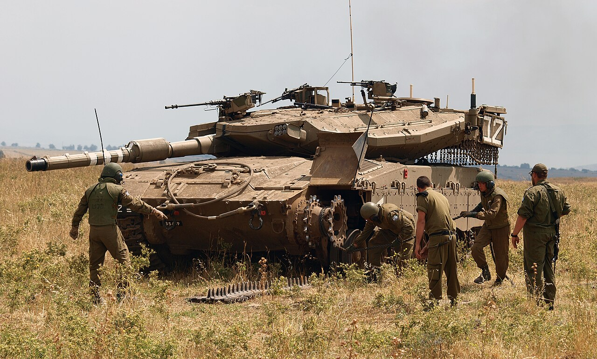
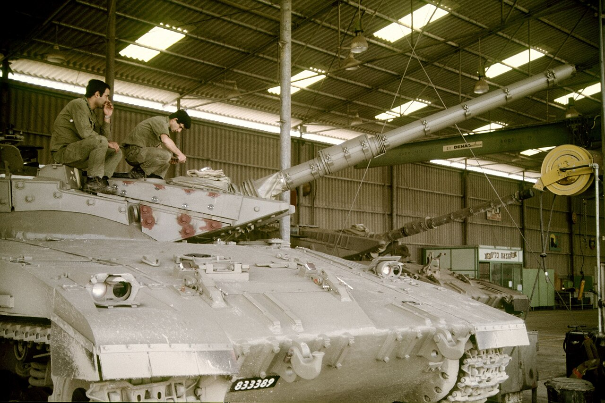
- The classic layout: chevron centered on each turret side, big and legible — these are the models where the marking is actually visible.
- Blazer ERA bricks carry small white stencil digits full-scale (block numbers) — at 6 mm just let the wash pick out the brick edges.
- צ plate front + rear, orange panel on rear deck, often a second panel on the turret roof in Lebanon.
Paint: Sinai Grey. ERA blocks a half-shade darker (add a touch of German Grey), then drybrush unifies. Sho’t: stowage bins overflowing — khaki bedrolls along the turret rear give it the right silhouette.
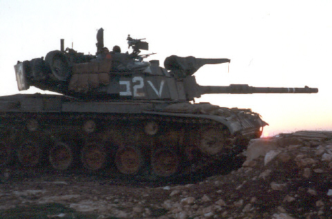
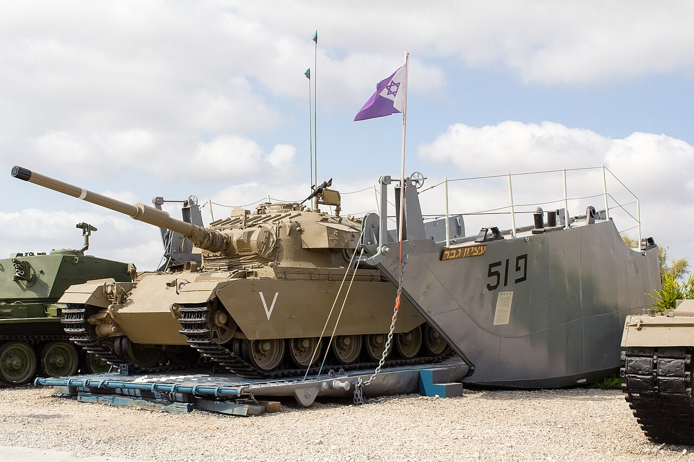
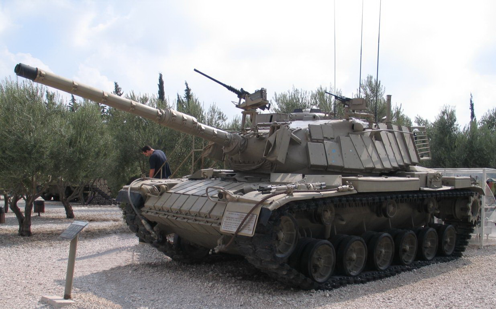
- Centurion hull, no turret: chevron on the hull sides, forward of the exhausts; number on the rear plate.
- Orange panel flat on the roof — troop carriers got shot at by friendly air more than anyone, they marked generously.
- Paint as the tanks; the raised superstructure sides collect the drybrush and read nicely.
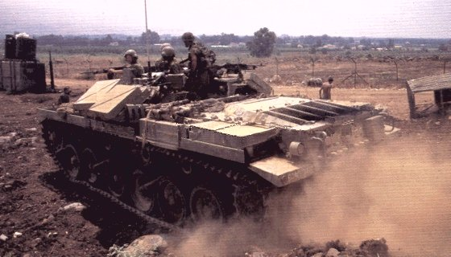
- M113s are less formally marked than tanks: chevron or a white tactical number on the hull sides (often on the stowage racks), צ plate front and rear.
- Orange panel across the roof — on mech infantry this is the marking to paint; it also tells the two M113 texture-platoons apart from the tanks at arm’s length.
- M125/M106 (mortar carriers): open roof hatch reads as a dark rectangle — paint the interior near-black. M150: TOW tube on the roof, white nose cap dot.
- Zelda = external stowage everywhere: khaki/olive lumps along the sides, jerrycans on the trim vane. Vary the khakis per platoon.
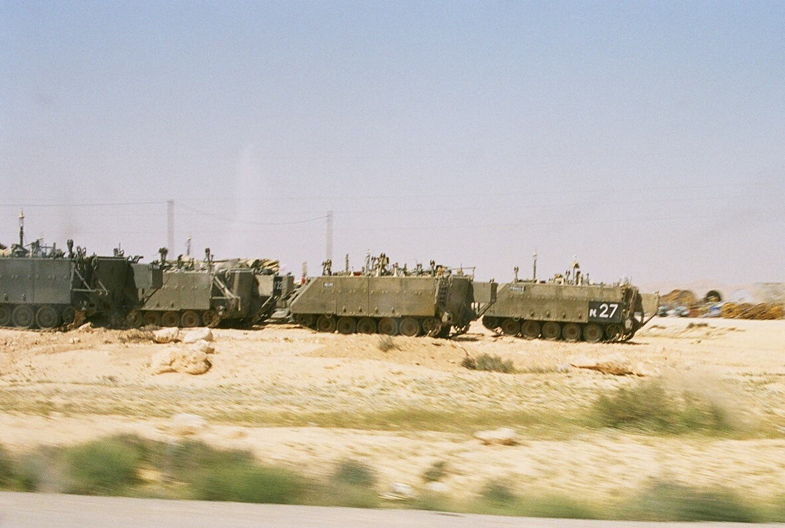
- Artillery marks by battery: white digit or letter on the hull/turret sides, chevrons less common. צ plates, orange panel on the turret roof.
- Barrel counterweight and mantlet dust cover in canvas khaki; huge stowage racks on the turret — load them up, it’s what makes an M109 look IDF (“Rochev”).
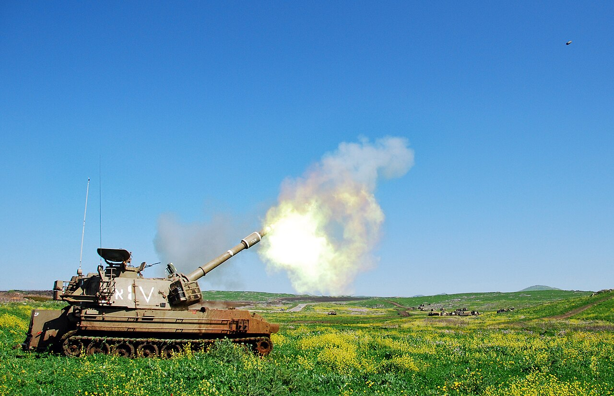
- The missile carrier that spent its career pretending to be a tank. The disguise was the vehicle itself — boxy fake turret, dummy gun — not the markings: service photos show standard chevrons and turret numbers like any Magach. Mark it as a tank; that’s the point.
- Paint as the Magach it pretends to be. The boxy “turret” gets the same dust treatment.
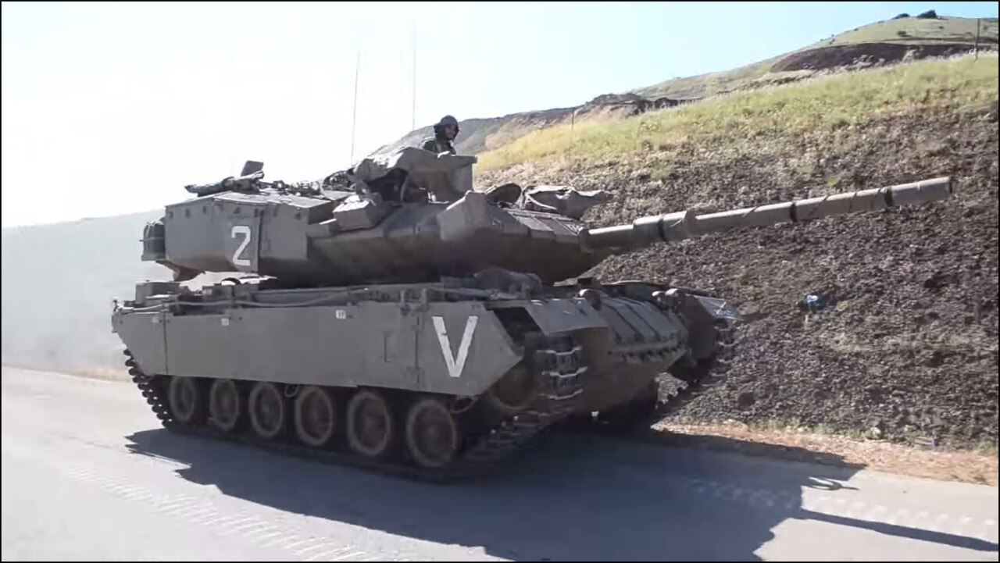
- Soft-skins carry the צ plate (white on black, bumper) and little else painted; recon companies sometimes add a small white tactical digit on the hood.
- Orange panel on the hood or across the rear — recon runs ahead of everyone and wants the air on its side.
- Paint: Sinai Grey, tires German Grey, seats/tilt khaki. The 106mm RR and TOW tubes near-black with a dry-brushed muzzle. RBY: open crew compartment — dark interior wash, then crew helmets as khaki dots.
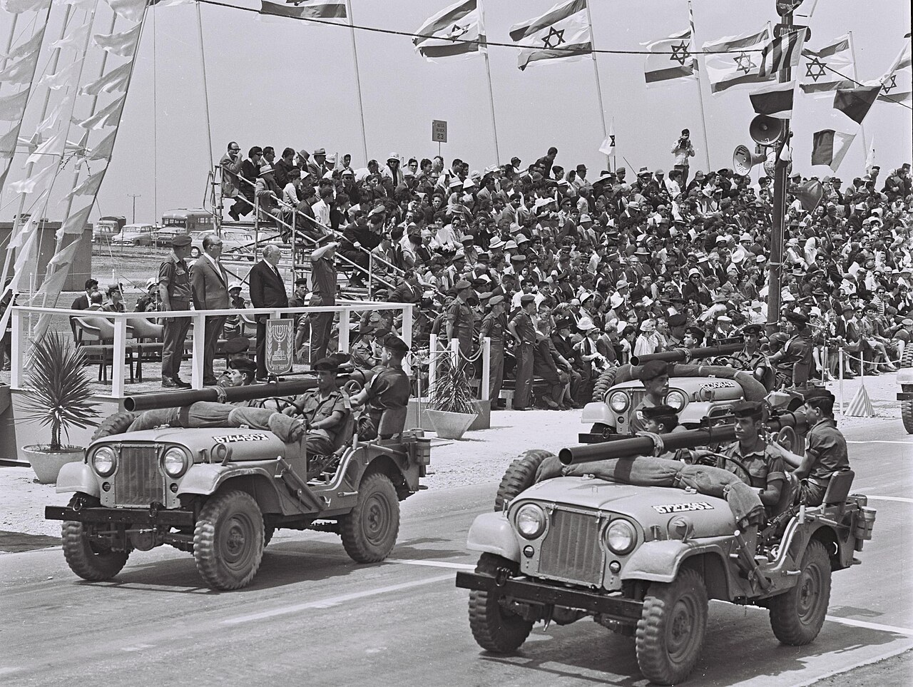
- Air defense and MLRS follow the M113/tank pattern: צ plates, white battery digit, orange roof panel. Nothing exotic.
- M163: the Vulcan barrel cluster near-black, radar drum a shade darker than the hull. Chaparral: the four missiles white with dark glass seeker noses — the white rounds are the visual signature. MLRS: launcher box panel lines picked out by wash; IDF “Menatetz” ran plain Sinai Grey.
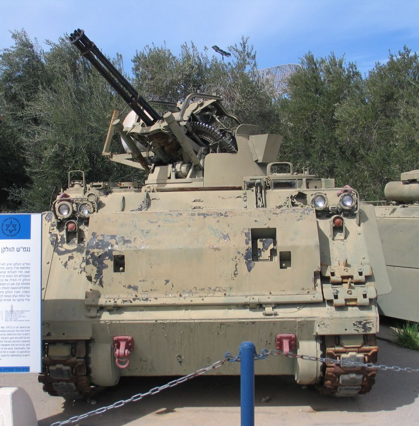
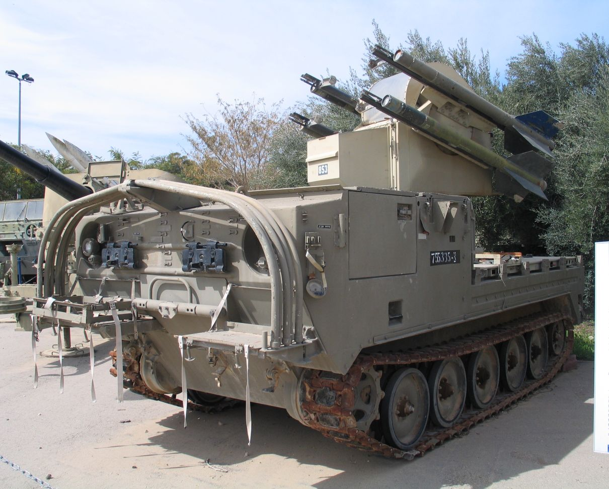
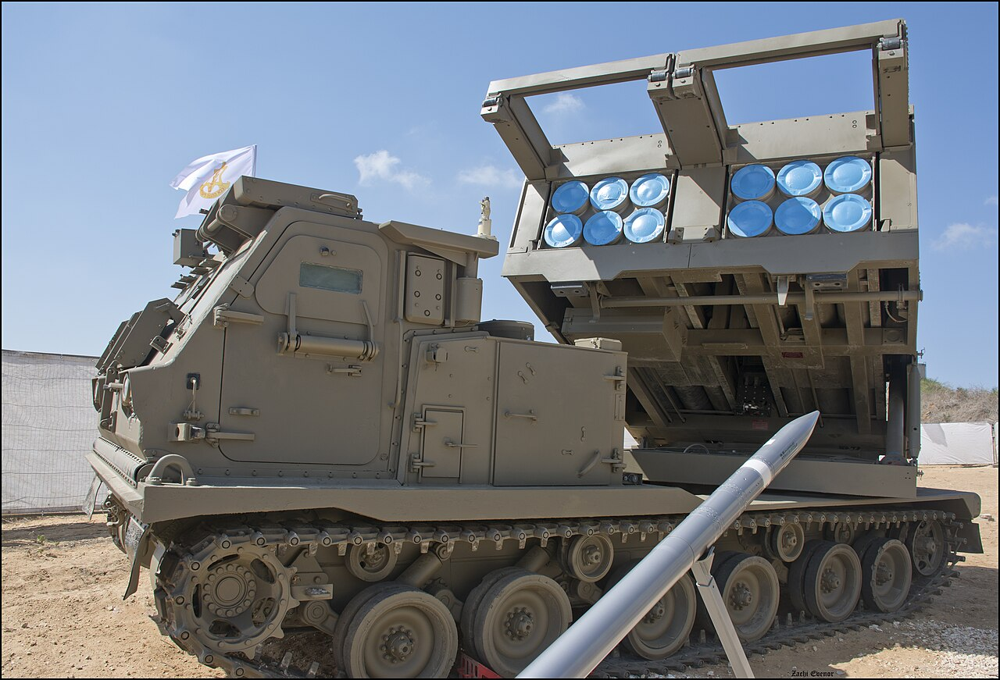
- War booty pressed into IDF service — marked loudly so nobody shoots them: oversized white chevrons on every face, orange panels on every horizontal surface, צ plates over the old Arabic plates.
- Paint: either leave them in captured sand (Vallejo 70.819 base — a nice one-off among the grey) or repaint Sinai Grey like the depot eventually did. The four white-on-sand Shilkas will be the most photographed models in the army; lean into it.
- IAF roundel (blue Star of David on white disc) on the tail boom sides, plus a 2–3 digit black tail number on the nose or boom. roundel ≈1 mm — a white dot with a blue center dot sells it completely
- Rotor heads and engine housings near-black; canopy frames dark over a gunmetal canopy.
Paint: UH-1 and CH-53 overall US Olive Drab (Yas’ur weathered toward brown — add Tan Earth to the drybrush). AH-1 Tzefa: olive drab, and by the 90s IAF Cobras were picking up sand/tan schemes — either is period-correct, so paint the squadron the scheme you like. AH-64 Peten: very dark US helo drab — near-black green (German Grey + a drop of olive).
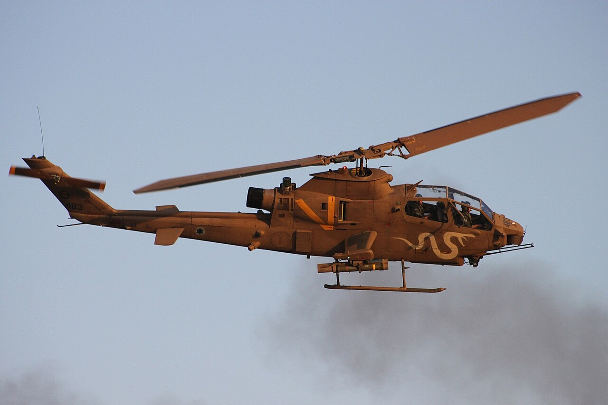
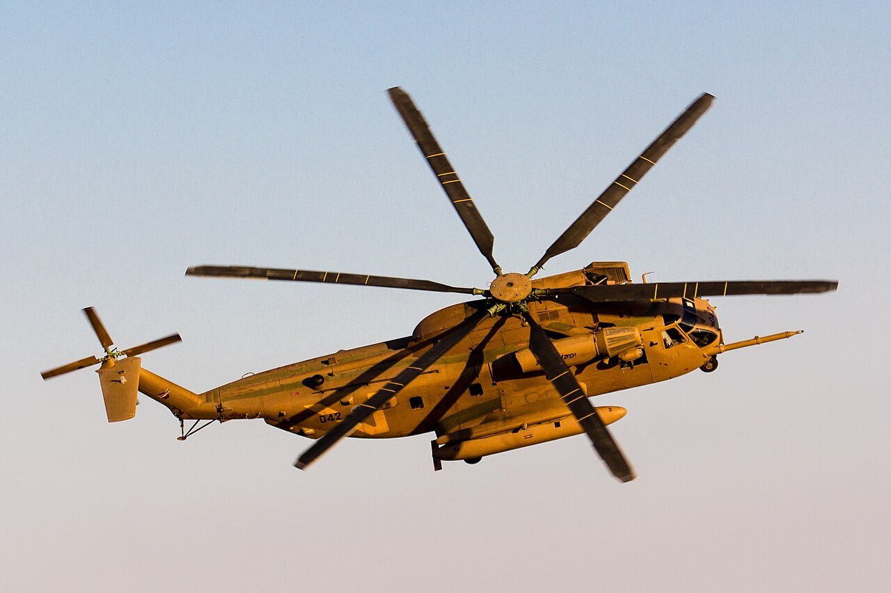
- Three-tone uppers (sand / brown / green in soft-edged bands), pale grey-blue undersides.
- Roundels: six positions — top and bottom of both wings, plus both fuselage sides aft of the wing.
- Yellow-and-black ID stripes on the rudder — the War of Attrition quick-recognition marking IAF Skyhawks kept for years; at this scale a plain yellow rudder reads correctly.
- Black 2-digit nose number; skip at 6 mm.
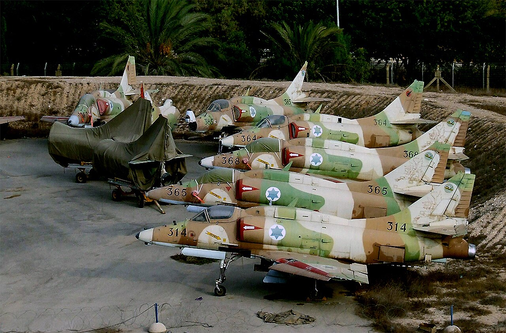
Confidence notes
Softer — check photos before painting if you care: exact orange-panel shapes/positions per vehicle (they were lashed wherever they fit), captured- vehicle marking details, AH-64 delivery scheme, exact A-4 camo band layout and whether the rudder stripes were still worn by the mid-80s. None of these change anything visible at 6 mm except the panel positions.
Era: anchored to the early 1990s, which makes the whole roster fit — MLRS, Peten and Merkava 3 are in service, and Sho’t/Magach reserve formations are historical reality, not a fudge. The A-4s were flying with reserve squadrons by then; whether they still wore the rudder stripes is the one open question left.
Sources: Flames of War “Israeli Decals Deciphered”
(chevron/platoon system), Vallejo IDF color range (71.142 Sinai Grey 82),
period photo references. Diagrams are schematic, not to scale. Photos in
photos/ are from Wikimedia Commons (search the filename there
for the original and full resolution); private reference use.